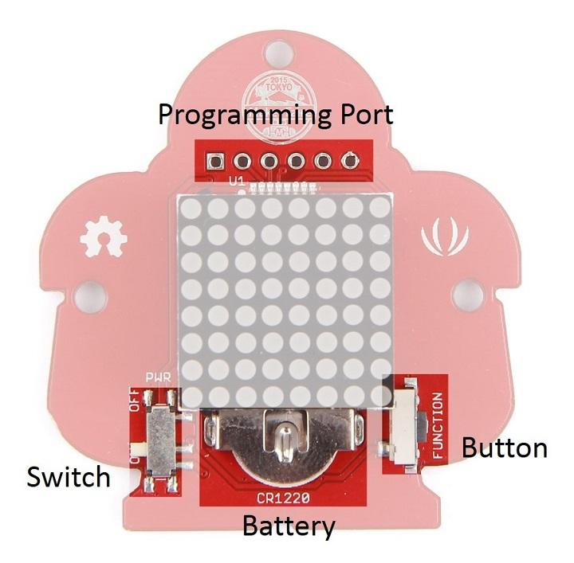
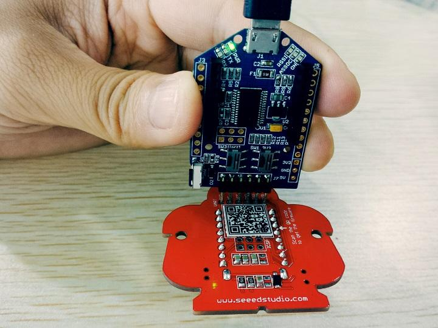
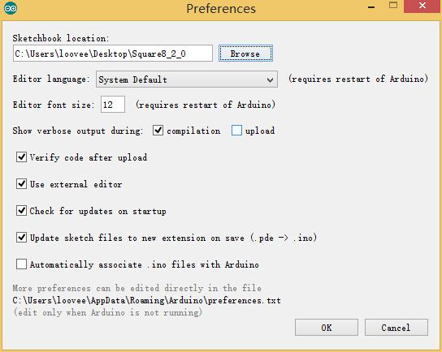
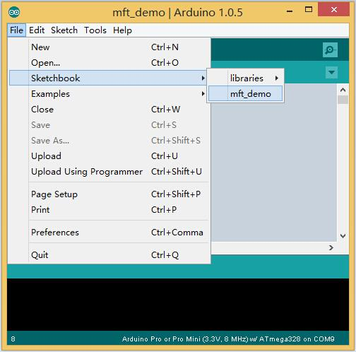
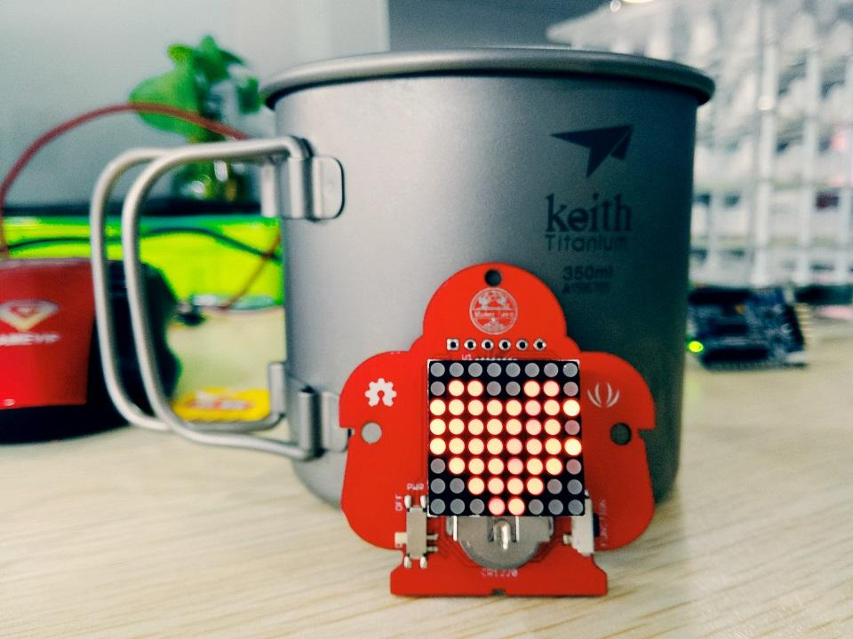
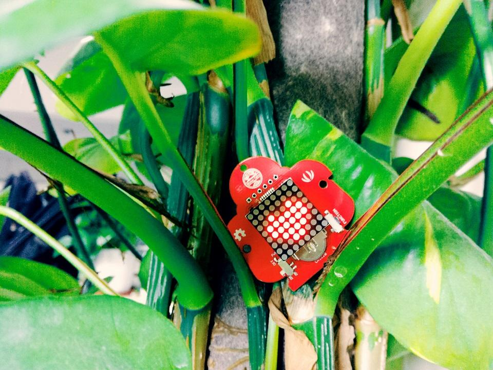

This is a badge of innovation we made for Maker Faire Tokyo.
Here is block diagram of Square8 v2.0 module which consists of following parts.

After this section, you can make Square8 run with only few steps.
To upload code to Square8, you will need an Usb-to-Uart device, Here is a reference.
If this is your first time using Arduino, Please put hand on [[Getting_Started_with_Seeeduino|]here]to start your Arduino journey.
Insert UartSBee into the programming port of Square8. As shown below:

Click here to download sketch and decompress it to any folders(e.g. Drive D or desktop）
Now you need simple configurations for Arduino sketchbook.
Launch Arduino IDE and click File>Preferences and add absolute location for downloaded testing code at Sketchbook location .

After configurations, please restart Arduino, click File>Sketchbook and choose grove_uart_wifi_wiki after which testing code will show up.

Click Tools>Board to choose Arduino Pro or Pro Mini(3.3V, 8MHz) w' Atmega328 and select respective serial port.
Now click Upload(CTRL+U) to burn testing code. Please refer to here for any error prompt and you can also add comment on forum
After upload completed, you can see something move on the led matrix .
Square8 with Cup:

Square8 in plant:

And finally, Square8 and the gril:
The code is in Arduino style, which is very easy to understand.
There are something you can modify in the code to show your name.
/* * Demo for Maker Faire Tokyo * loovee * 2015-7-15 */ #include <LED_Matrix.h> #include <LED_Matrix_dfs.h> #include <MsTimer2.h> // you can change your name here char __name[] = "Maker Faire Tokyo ";
What you need to do is change __name, just delete Maker Faire Tokyo and type your name instead.
Then upload the new code to Square, and it's done.